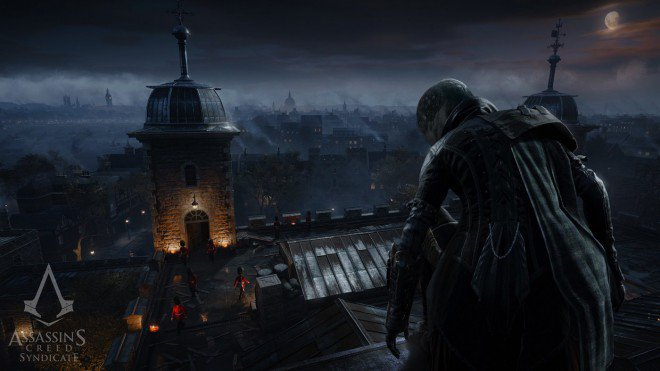
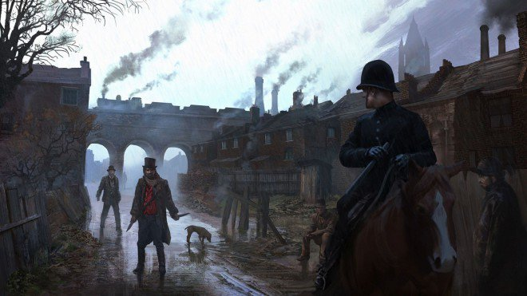
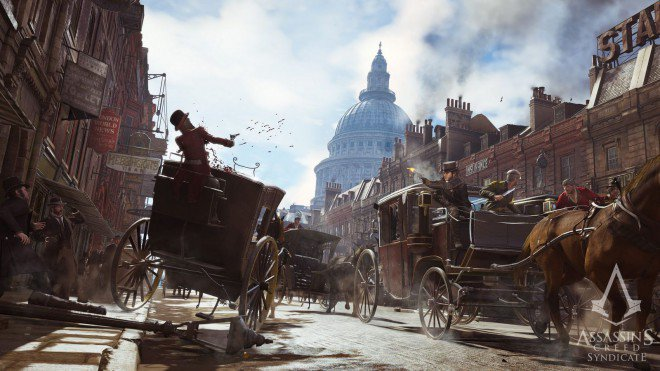
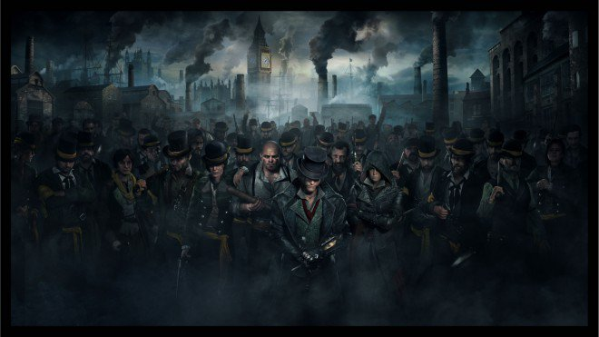
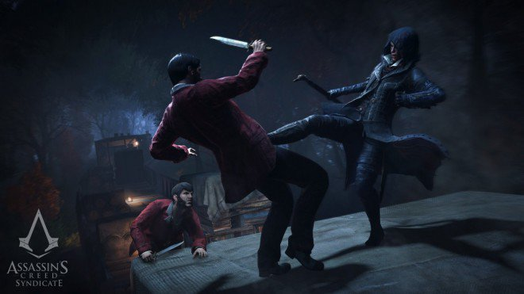
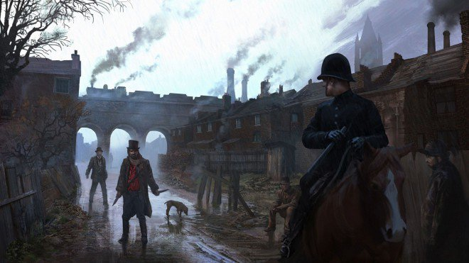
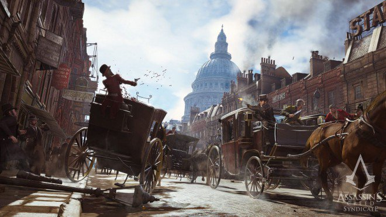
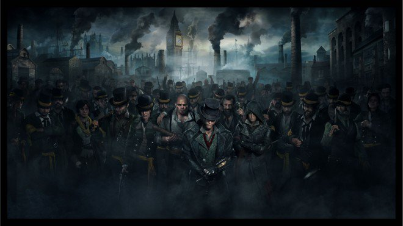
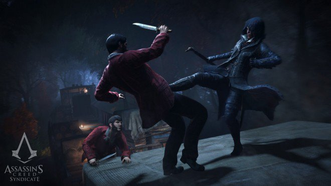

La nuova generazione di Assassin's Creed aveva iniziato con piu' di un problema a causa di una programmazione troppo frettolosa sulla next-gen di Xbox One e PS4. Risolti i problemi, patch dopo patch, ecco che si arriva alla seconda incarnazione: Assassin's Creed Syndicate.
Dalla Francia rivoluzionaria sia passa all'Inghilterra operosa della rivoluzione industriale, con una citta' magistrale per dimensioni e dettaglio ma poco realistica nel riproporci l'atmosfera cupa e nebbiosa descritta dalla letteratura del periodo. Andiamo quindi a scoprire il gioco nei suoi vari aspetti.

TRAMA
Dopo una trama quasi inesistente, Ubisoft doveva recuperare anche questo aspetto e, in generale, migliorare il comparto narrativo anche dal punto di vista dei personaggi, privi di spessore e poco caratterizzati nel capitolo sulla rivoluzione francese. Il lavoro fatto si vede e l'introduzione del gioco ci permette di conoscere i fratelli Frye. Subito dopo si torna al presente proseguendo quel dualismo tra Animus e "vita reale" che si era affievolito dopo i capitoli con Desmond, raccontandoci la progressione tramite una serie di video. A livello di trama e personaggi si nota un lavoro superiore di una spanna abbondante rispetto ad Unity: i personaggi sono piu' carismatici, vuoi per una caratterizzazione migliore in generale, vuoi per l'immancabile effetto "macchietta" del contrasto tra fratello e sorella. Anche gli NPC che incontreremo sembrano aver guadagnato carisma, cosi' come risulta molto piu' interessante e completo il nuovo villain di questo capitolo. Terminata la prima fase introduttiva si entra nel vivo dell'azione: i fratelli Frye si troveranno di fronte ad una Londra in mano ai templari e dovranno riconquistare la citta', liberare gli oppressi e "salvare la cheerleader". Se le premesse sono semplici, lo svolgimento risulta pero' interessante ed articolato, specie considerando che la trama si lega a doppio filo al gameplay. E' vero, infatti, che e' possibile procedere come un treno e andare dritti al punto delle missioni principali, ma grazie al contesto, alla coerenza delle side quest e al sistema di conquista della citta', il giocatore sara' piu' incentivato nell'affrontare la mole di storie "secondarie" proposte. Da notare, infatti, che tutto il gioco della conquista della citta' con roccaforti da espugnare, templari da cacciare e guerra fra bande, viene introdotto direttamente nella trama generale come un obbiettivo di Jacob, piu' orientato all'atto pratico della liberazione di Londra dalla piaga templare rispetto alla Sorella Evie che seguira' ,invece, la storia dei frutti dell'Eden. Insomma la carne al fuoco e' tanta e, senza spoilerare, possiamo ritenerci discretamente soddisfatti da questo capitolo per il quale gli sviluppatori hanno rinunciato a multiplayer e coop in modo da focalizzare l'esperienza sulla campagna giocatore singolo. Una trama priva di particolari colpi di scena ma sicuramente piu' approfondita di Unity, sebbene non si possa gridare al capolavoro per la storia.  GAMEPLAY
Immutato nel concetto, il gamplay di Assassin's Creed Syndicate si perfeziona nelle sue dinamiche. Si parte ad esempio dall'Occhio dell'Aquila, l'abilita' degli assassini che permette di evidenziare avversari e oggetti d'interesse. Con Syndicate sparisce il limite di tempo e il necessario caricamento per il riutilizzo: quando si cammina e' possibile mantenere l'occhio dell'acquila attivo illimitatamente, cosi' da "flaggare" gli avversari e pianificare la strategia per l'infiltrazione o l'attacco. L'occhio sidisattiva poi appena si inizia la corsa. A proposito dell'esplorazione cambia anche il sistema di corsa acrobatica, che prende la dinamica dei tasti A e B di Unity e perfeziona il sistema cosi' da offrire un controllo piu' preciso. L'effetto si nota nei cambi di direzione repentini e nelle scalate, oltre ad evitarci quelle situazioni in cui il nostro assassino andava incontro a morte certa quando tenevamo premuto il grilletto di corsa lanciandoci, per sbaglio, da altezze eccessive. L'introduzione del rampino, poi, taglia di molto i tempi dell'esplorazione a piedi e risolve quella frustrazione nel dover arrampicarsi per ore ed ore nel corso della campagna, specie considerando le enormi dimensioni di Londra. Purtroppo la sua implementazione non e' tra le piu' fluide e ci sarebbe piaciuto ritrovarci con un puntamento piu' immediato in corsa cosi' da rendere l'esplorazione piu' acrobatica, versatile e, perche' no, spettacolare. In modalita' furtiva la copertura dietro gli angoli e' automatica: all'inizio potrebbe sembrare che il sistema manuale (tramite tasto A in Unity) sia piu' efficace in termini di velocita' ma, una volta presa la mano, si scopre come l'automatismo semplifichi molto la vita durante esplorazione e combattimenti. Inoltre in questo segmento viene introdotto anche il "rapimento", funzione da usare per le taglie ma anche in alcune missioni della trama principale che aggiunge varieta' costringendo a studiare di piu' l'approccio per evitare di uccidere il bersaglio. Passando poi allo sviluppo del personaggio arriva un albero delle abilita' che si avvicina di piu' ai GDR. Le abilita' sono raccolte in combattimento, furtivita' ed ecosistema e sono in numero nettamente superiore rispetto ad Unity, cosi' da personalizzare ancora il gameplay in dipendenza dalle caratteristiche del personaggio. Sbloccando un'abilita' dopo le missioni si sbloccano quelle dello stesso livello, fatte salve le abilita' che richiedono prerequisiti che vengono abilitate solo in conseguenza di una determinata missione. In questo modo, tramite i px ricevuti (ogni 1000 XP un punto abilita'), si potranno acquistare potenziamenti scegliendo tra l'occhio dell'aquila migliorato (vede attraverso i muri) o il looting automatico dei nemici dopo ogni assassinio, i vari livelli di "scassinare", potenziamenti alla salute, incremento dei drop di nemici e scrigni e molto altro ancora. Si puo' quindi dire che, per la prima volta, la saga di Assassin's Creed raggiunge un buon livello di personalizzazione del personaggio, facendo si che le nostre scelte nelle abilita' e nell'ordine di acquisto si ripercuotano sul gameplay, adattandolo alle nostre esigenze. I piu' frettolosi, ad esempio, potrebbero buttarsi sul looting automatico mentre i "completisti" potrebbero preferire avere fin da subito le varie abilita' di scassinare. Jacob & Evie Fry Grande novita' della serie e' sicuramente la presenza di due protagonisti. Grazie a quest'introduzione il gioco ci permette di esplorare la citta' e giocare sia utilizzando Jaboc che Evie. Il primo e' il piu' irruento della coppia, quello che preferisce lo scontro e che quindi andrebbe scelto per un approccio piu' "fisico" nelle missioni. Evie sarebbe invece la specialista fra i due, un personaggio orientato alla furtivita'. Il condizionale e' pero' d'obbligo dato che gli sviluppatori non hanno creato una distinzione cosi' marcata all'atto pratico. Sebbene entrambi abbiano una manciata di abilita' esclusive che l'altro fratello non ha, i due personaggi possono attingere alle stesse abilita'. L'impronta da dare ai due, quindi, resta a completa discrezione del giocatore che potrebbe prediligere una Evie piu' combattiva e un Jacob piu' furtivo ad esempio. I due personaggi vanno quindi fatti crescere in maniera indipendente per quanto riguarda abilita' e attrezzature. Gli sviluppatori ci mettono a disposizione, a conti fatti, due "carriere" in una: scegliendo specializzazioni diverse per i due sara' infatti possibile affrontare al meglio le varie missioni piuttosto che puntare su uno sviluppo "tuttologo" me generico. Ad ogni modo non sara' necessario far progredire separatamente i fratelli dato che Evie e Jacob condividono soldi, esperienza ed equipaggiamento.  Assassin's & Furious: Londra Drift
Le carrozze aggiungono un divertente intermezzo che si fa notare anche a livello di gameplay accorciando i tempi durante l'esplorazione della citta'. Una delle cose che noterete, se siete giocatori di Assassin's Creed fin dalle origini, e' il minor utilizzo degli spostamenti rapidi da un punto di osservazione all'altro. Dopo poco tempo, infatti, si capisce che muoversi in carrozza e' piu' divertente ma anche abbastanza veloce, facendoci preferire questa opzione all'attesa del caricamento necessario quando si usa lo spostamento rapido. Oltre ai normali spostamenti la carrozza diventa anche un mezzo, sia per la fuga che per inseguimenti e combattimenti sul tetto come nei migliori film d'azione. Inoltre a livello di gameplay il furto di carrozza in stile GTA diventa anche un'occasione per creare del gioco: se individuati dai poliziotti, ad esempio, bisognera' fare i conti con un inseguimento spesso difficile da gestire data la tenacia dell'AI nel non mollare la preda. Che dire, poi, delle corse clandestine? Semplicemente spettacolari dato che non si tratta della classica "corsa pulita" ma di veri e propri combattimenti a suon di sportellate che ci faranno chiedere: "come puo' il cavallo essere ancora vivo dopo tutta questa distruzione"? Chissa', quel che e' certo e' che il sistema di guida e' stato ben implementato e gli sviluppatori sono riusciti a restituire anche un abbozzo di fisica, seppur restando nel mondo arcade, del comportamento delle carrozze. Molti i modelli disponibili (dalla cabrio al SUV passando per la due posti sportiva) e ognuno restituisce una sensazione diversa a causa di peso e ingombro che si notano durante la guida. Inoltre e' presente anche un sistema di danni sia estetici che fisici, in quest'ultimo caso si assiste ad una leggera riduzione delle prestazioni della carrozza. Molto utile e pratica, infine, l'indicazione sulla strada del "navigatore" che facilita la navigazione verso la nostra destinazione in maniera semplice e non particolarmente invasiva. Ah...e ricordatevi: siamo a Londra, si guida al contrario...ma ve ne accorgerete dopo i primi incidenti!  Combattimenti & Intelligenza Artificiale
Una delle note dolenti della saga e' la gestione dei nemici e dell'intelligenza artificiale. Spesso ingenui, poco ostinati e troppo cortesi nel mettersi in fila, i nostri avversari hanno pero' iniziato a farsi valere gia' con Unity, dove la difficolta' e' stata aumentata semplicemente amplificando la potenza dei loro colpi. Con Syndicate sembra che Ubisoft abbia deciso di fare un passo in avanti, offrendo un livello di sfida piu' alto: se in passato, semplificando all'estremo, bastava premere un tasto ripetutamente per cavarsela in uno scontro, ora bisogna ragionare e non ci si puo' buttare a capofitto, specie quando andiamo ad affrontare avversari piu' forti e meglio equipaggiati. Innanzitutto ogni avversario e' dotato di un livello (si puo' scoprire tramite l'occhio dell'aquila), sia che si tratti della banda rivale, sia che si tratti dei semplici poliziotti di quartiere o delle guardie reali. Con il crescere del livello non aumenta solo l'entita' dei colpi dei nostri nemici o la loro salute ma anche la varieta' delle mosse e contromosse: gli avversari ci costringono piu' spesso alla schivata con contrattacco o utilizzano essi stessi il contrattacco sui nostri colpi e non sara' raro dover rompere piu' di una guardia o schivare, nel mezzo del combattimento, colpi di pistola "volanti". L'impianto e' quindi si semplice come la serie ci ha abituato ma il grado di sfida migliora e le mani devono lavorare molto di piu' rispetto al passato. Tutto il sistema dei livelli, poi, rende molto interessante la pianificazione di missioni e combattimenti. Con un protagonista di livello 4, ad esempio, non sara' impossibile sconfiggere un avversario di livello 6 ma sara' necessaria molta abilita' e una buona dose di pazienza e resistenza. Sempre in tema di intelligenza artificiale, con Syndicate abbiamo notato un notevole progresso nei tempi di reazione degli avversari. Se in passato era possibile correre, partendo da una distanza ragionevole, verso un nemico e assassinarlo prima che questo si accorgesse di noi, ora l'attacco frontale "con rincorsa" non e' cosi' semplice (a meno di partire, nascosti alla vista, da molto vicino) e i nemici perdono quell'aria "intontita" diventando piu' reattivi nell'individuarci. Il risultato e' duplice: da un lato si costringe il giocatore a studiare bene luoghi e strategie, agendo in maniera veramente stealth per cavarsela (specie contro avversari di livello notevolmente superiore). Dall'altro si puo' sempre scegliere la tattica irruenta del "corri e spacca" ma i nemici accorreranno prima e in massa, individuandoci piu' facilmente e rischiando di farci fare una brutta fine contro i grandi numeri. Resta una caratteristica dell'intelligenza artificiale alla quale ormai siamo abituati: i nostri avversari, seppur migliorati, hanno ancora quella tendenza ad aspettare il proprio turno in concomitanza con l'avvio delle animazioni delle uccisioni. Inoltre, ad eccezione degli attacchi a distanza, non ci si trova mai in una situazione dove veniamo attaccati contemporaneamente da piu' di 2/3 avversari. Gli altri sembrano pero' pianificare l'azione e girano intorno al combattimento alternandosi, tattica questa che aumenta la difficolta' dato che sara' piu' difficile concentrare tutti i colpi su un avversario per smaltire il branco. In generale si nota comunque un miglioramento: sistema dei livelli, varieta' degli attacchi e quantita' di nemici fanno si che il combattimento riacquisti un valore e costringa a fare affidamento all'abilita' piuttosto che al becero "button smashing". Le bombe fumogene, poi, non permettono piu' come in passato di eliminare i nemici con un assassinio, riducendo ancora di piu' la facilita' a vantaggio del divertimento. Se serve una mano, comunque, in Syndicate si puo' fare affidamento ai membri della banda e arruolarli per portarceli dietro sia in esplorazione che nei combattimenti. Il sistema delle combo porta il combattimento ad un nuovo livello estetico. Gia' in Unity avevamo visto una buona integrazione dello scenario e animazioni divertenti e particolari nelle finisher. Con Syndicate il tutto diventa ancora piu' cinematografico e, specie acquistando i potenziamenti relativi al combattimento, sara' possibile ottenere buone soddisfazioni durante gli scontri piu' concitati. Negli inseguimenti, poi, gli avversari cercano a tutti i costi di non mollare la presa: banda rivale o poliziotti, entrambe le categorie faranno del loro meglio per inseguirvi a piedi o con le carrozze e, soprattutto, avranno il grilletto facile, colpendovi con coltelli o pistole alla prima occasione, facendo diventare piu' complesso il gioco del "semina l'avversario" durante una ripiegata o una fuga strategica. L'integrazione con la storia e il gameplay porta il tutto anche in una dimensione strategica piu' generale. All'inizio i membri della banda di quartiere che controlla la citta' tenderanno a "fare brutto", intimando di lasciare il territorio "altrimenti ci arrabbiamo". Crescendo nelle abilita' legate al covo e alla banda, pero', si potra' scegliere di selezionare potenziamenti che permettono, ad esempio, di incutere piu' timore e quindi di avere vita piu' facile anche nei quartieri non ancora conquistati. La polizia infine svolge il ruolo super partes di controllore e interverra', qualora causiate, troppi danni con prontezza e una buona dose di violenza. Anche in questo caso si puo' puntare alla strategia acquistando il potenziamento delle "mazzette", cosi' da far chiudere un occhio ai poliziotti durante le nostre beghe fra bande. La mia Banda e' differente Il covo e' un'elemento classico delle ultime produzioni di Assassin's Creed e, a seconda del capitolo, ha avuto piu' o meno importanza, restando comunque una costante. In Syndicate il Covo ritorna piu' affascinante che mai (non vi anticipiamo niente ma scoprirete il perche' non appena vedrete la location) ma anche piu' completo. Ricalcando quanto fatto per le abilita' dei personaggi, gli sviluppatori hanno introdotto un albero dei potenziamenti anche per la nostra banda. Si tratta di una sezione gestionale dove, tramite consueto investimento di denaro, si andra' ad influire direttamente sulla vita nel gioco in maniera tangibile e consistente. La lista di potenziamenti e' lunga ed e' da scoprire in gioco, vi anticipiamo comunque che si parte dal semplice mercato delle medicine che abilita l'acquisto dei kit medici fino a tutta una serie di vantaggi in combattimento (potenziare il livello dei membri della banda, dotarli di piu' armi a distanza e via dicendo), esplorazione (mazzette alla polizia per chiudere un occhio) e nella gestione del denaro (ad esempio sconti su munizioni o investimenti per incrementare la rendita). Insomma, un sistema che influenzera' il gameplay in tutta una serie di aspetti: ancora una volta non si puo' non lodare la scelta "manageriale" che, affiancata all'introduzione dell'albero delle abilita' per il personaggio, crea un titolo di spessore superiore rispetto al passato e aumenta le possibilita' di immersione del giocatore. Un esempio pratico? Parliamo delle carrozze: il giocatore potra' scegliere se investire nella creazione di autisti cosi' da trovare piu' facilmente una carrozza libera durante l'esplorazione oppure di investire nelle mazzette alla polizia che chiudera' piu' facilmente un occhio in caso di furto di carrozza "alla GTA". Interessante anche che, tra i requisiti dei vari potenziamenti, non ci sia solamente il vil denaro ma anche una serie di risorse da raccogliere, materiali (fra comuni e rari) che possono essere utilizzati anche per costruire armi ed equipaggiamento, costringendoci ancora una volta ad una scelta di campo: puntare prima a potenziare il nostro equipaggiamento oppure impiegare i materiali per sviluppare le abilita' della banda?  TECNICA
Con Syndicate si va, fondamentalmente, a perfezionare un motore grafico che aveva gia' dimostrato di essere in grado di appagare visivamente e su cui si e' lavorato nella risoluzione di bug e glitch. Nel nuovo titolo, pero', gli sviluppatori hanno dovuto fare i conti con una Londra immensa che propone i sette quartieri della citta' con una grande varieta' di stili, architetture e dettagli diversi. La metropoli e' ben animata e non si ha mai la sensazione di trovarsi in una citta' fantasma, sebbene la quantita' di personaggi visti in Unity nella stessa scena non sia raggiunta da questo nuovo capitolo. Come si e' potuto vedere da trailer e screenshot, la qualita' grafica pura non e' a livello di Unity: gli sviluppatori hanno scelto di limare questo aspetto a vantaggio della fluidita' e dell'ottimizzazione. Da questo punto di vista, infatti, durante il gioco (fermo restante la necessita' della patch del day one) non abbiamo notato freeze e glitch tali da farne un problema come qualche utente ha lamentato in rete in questi giorni pre-lancio. Resta un dato di fatto che la qualita' generale e' inferiore, sia per i personaggi che per l'ambiente. Mentre quest'ultimo riesce a raggiungere, complice l'ottima cura nel dettaglio e nella fedelta', un risultato soddisfacente, i volti degli NPC risultano deludenti e spesso si ha l'impressione di trovarsi di fronte ad un gioco "old gen" da questo punto di vista, considerando anche il passo indietro nella resa della capigliatura ad esempio. Anche resa dell'acqua e l'illuminazione, che su Unity aveva raggiunto ottimi livelli (basti pensare agli effetti all'interno delle varie chiese) qui perde punti. In particolare l'acqua risulta piu' statica e i riflessi sono stati notevolmente ridotti. L'illuminazione e' invece buona ma non raggiunge l'eccellenza. In generale si tratta di un comparto tecnico ridimensionato ma che permette di offrire un frame rate abbastanza stabile senza cali vistosi neanche nelle situazioni piu' concitate o mentre si corre in carrozza. Miglioramenti anche per la qualita' delle animazioni: innanzitutto il nuovo sistema di corsa aggira meglio gli ostacoli, sebbene alcune situazioni dimostrino ancora una certa legnosita' e un comportamento irrealistico, limitato solamente ad alcune occasioni. In combattimento, grazie alla dominanza del corpo a corpo, aumenta la velocita' con scazzottate e colpi veloci in un sistema fluido che difficilmente deludera'. Grande impatto visivo, poi, e' dato dalle finisher che sono piu' variegate rispetto ad Unity e utilizzano bene l'ambiente e gli oggetti circostanti. In conclusione va apprezzato il lavoro degli sviluppatori nel portare un titolo divertente e innovativo in alcune dinamiche. La ricetta e' stata quella di prendere le feature apprezzate nel passato, riporle con una nuova veste e puntare all'ottimizzazione generale piuttosto che al titolo che fa gridare al "miracolo". Restano alcuni nei della serie e la grafica non e' paragonabile ad altre produzioni del settore ma, considerando la mole di attivita' e le dimensioni di Londra, possiamo ritenerci soddisfatti, specie se si mettono sul piatto della bilancia le innovazioni nel gameplay. Il sistema di abilita' ha infatti ora un ruolo rilevante nel gioco, i combattimenti sono piu' impegnativi e quindi anche divertenti (oltre che esteticamente piacevoli) e l'esplorazione piu' precisa e fluida. Buona la longevita': con trama principale e un buon numero di side-quest si raggiungono tranquillamente le 20/25 ore.
GAMEPLAY 8.5
TECNICA 7
LONGEVITA' 8.5
MULTIPLAYER -
GLOBALE 8.5
Dopo una trama quasi inesistente, Ubisoft doveva recuperare anche questo aspetto e, in generale, migliorare il comparto narrativo anche dal punto di vista dei personaggi, privi di spessore e poco caratterizzati nel capitolo sulla rivoluzione francese. Il lavoro fatto si vede e l'introduzione del gioco ci permette di conoscere i fratelli Frye. Subito dopo si torna al presente proseguendo quel dualismo tra Animus e "vita reale" che si era affievolito dopo i capitoli con Desmond, raccontandoci la progressione tramite una serie di video. A livello di trama e personaggi si nota un lavoro superiore di una spanna abbondante rispetto ad Unity: i personaggi sono piu' carismatici, vuoi per una caratterizzazione migliore in generale, vuoi per l'immancabile effetto "macchietta" del contrasto tra fratello e sorella. Anche gli NPC che incontreremo sembrano aver guadagnato carisma, cosi' come risulta molto piu' interessante e completo il nuovo villain di questo capitolo. Terminata la prima fase introduttiva si entra nel vivo dell'azione: i fratelli Frye si troveranno di fronte ad una Londra in mano ai templari e dovranno riconquistare la citta', liberare gli oppressi e "salvare la cheerleader". Se le premesse sono semplici, lo svolgimento risulta pero' interessante ed articolato, specie considerando che la trama si lega a doppio filo al gameplay. E' vero, infatti, che e' possibile procedere come un treno e andare dritti al punto delle missioni principali, ma grazie al contesto, alla coerenza delle side quest e al sistema di conquista della citta', il giocatore sara' piu' incentivato nell'affrontare la mole di storie "secondarie" proposte. Da notare, infatti, che tutto il gioco della conquista della citta' con roccaforti da espugnare, templari da cacciare e guerra fra bande, viene introdotto direttamente nella trama generale come un obbiettivo di Jacob, piu' orientato all'atto pratico della liberazione di Londra dalla piaga templare rispetto alla Sorella Evie che seguira' ,invece, la storia dei frutti dell'Eden. Insomma la carne al fuoco e' tanta e, senza spoilerare, possiamo ritenerci discretamente soddisfatti da questo capitolo per il quale gli sviluppatori hanno rinunciato a multiplayer e coop in modo da focalizzare l'esperienza sulla campagna giocatore singolo. Una trama priva di particolari colpi di scena ma sicuramente piu' approfondita di Unity, sebbene non si possa gridare al capolavoro per la storia.  GAMEPLAY
Immutato nel concetto, il gamplay di Assassin's Creed Syndicate si perfeziona nelle sue dinamiche. Si parte ad esempio dall'Occhio dell'Aquila, l'abilita' degli assassini che permette di evidenziare avversari e oggetti d'interesse. Con Syndicate sparisce il limite di tempo e il necessario caricamento per il riutilizzo: quando si cammina e' possibile mantenere l'occhio dell'acquila attivo illimitatamente, cosi' da "flaggare" gli avversari e pianificare la strategia per l'infiltrazione o l'attacco. L'occhio sidisattiva poi appena si inizia la corsa. A proposito dell'esplorazione cambia anche il sistema di corsa acrobatica, che prende la dinamica dei tasti A e B di Unity e perfeziona il sistema cosi' da offrire un controllo piu' preciso. L'effetto si nota nei cambi di direzione repentini e nelle scalate, oltre ad evitarci quelle situazioni in cui il nostro assassino andava incontro a morte certa quando tenevamo premuto il grilletto di corsa lanciandoci, per sbaglio, da altezze eccessive. L'introduzione del rampino, poi, taglia di molto i tempi dell'esplorazione a piedi e risolve quella frustrazione nel dover arrampicarsi per ore ed ore nel corso della campagna, specie considerando le enormi dimensioni di Londra. Purtroppo la sua implementazione non e' tra le piu' fluide e ci sarebbe piaciuto ritrovarci con un puntamento piu' immediato in corsa cosi' da rendere l'esplorazione piu' acrobatica, versatile e, perche' no, spettacolare. In modalita' furtiva la copertura dietro gli angoli e' automatica: all'inizio potrebbe sembrare che il sistema manuale (tramite tasto A in Unity) sia piu' efficace in termini di velocita' ma, una volta presa la mano, si scopre come l'automatismo semplifichi molto la vita durante esplorazione e combattimenti. Inoltre in questo segmento viene introdotto anche il "rapimento", funzione da usare per le taglie ma anche in alcune missioni della trama principale che aggiunge varieta' costringendo a studiare di piu' l'approccio per evitare di uccidere il bersaglio. Passando poi allo sviluppo del personaggio arriva un albero delle abilita' che si avvicina di piu' ai GDR. Le abilita' sono raccolte in combattimento, furtivita' ed ecosistema e sono in numero nettamente superiore rispetto ad Unity, cosi' da personalizzare ancora il gameplay in dipendenza dalle caratteristiche del personaggio. Sbloccando un'abilita' dopo le missioni si sbloccano quelle dello stesso livello, fatte salve le abilita' che richiedono prerequisiti che vengono abilitate solo in conseguenza di una determinata missione. In questo modo, tramite i px ricevuti (ogni 1000 XP un punto abilita'), si potranno acquistare potenziamenti scegliendo tra l'occhio dell'aquila migliorato (vede attraverso i muri) o il looting automatico dei nemici dopo ogni assassinio, i vari livelli di "scassinare", potenziamenti alla salute, incremento dei drop di nemici e scrigni e molto altro ancora. Si puo' quindi dire che, per la prima volta, la saga di Assassin's Creed raggiunge un buon livello di personalizzazione del personaggio, facendo si che le nostre scelte nelle abilita' e nell'ordine di acquisto si ripercuotano sul gameplay, adattandolo alle nostre esigenze. I piu' frettolosi, ad esempio, potrebbero buttarsi sul looting automatico mentre i "completisti" potrebbero preferire avere fin da subito le varie abilita' di scassinare. Jacob & Evie Fry Grande novita' della serie e' sicuramente la presenza di due protagonisti. Grazie a quest'introduzione il gioco ci permette di esplorare la citta' e giocare sia utilizzando Jaboc che Evie. Il primo e' il piu' irruento della coppia, quello che preferisce lo scontro e che quindi andrebbe scelto per un approccio piu' "fisico" nelle missioni. Evie sarebbe invece la specialista fra i due, un personaggio orientato alla furtivita'. Il condizionale e' pero' d'obbligo dato che gli sviluppatori non hanno creato una distinzione cosi' marcata all'atto pratico. Sebbene entrambi abbiano una manciata di abilita' esclusive che l'altro fratello non ha, i due personaggi possono attingere alle stesse abilita'. L'impronta da dare ai due, quindi, resta a completa discrezione del giocatore che potrebbe prediligere una Evie piu' combattiva e un Jacob piu' furtivo ad esempio. I due personaggi vanno quindi fatti crescere in maniera indipendente per quanto riguarda abilita' e attrezzature. Gli sviluppatori ci mettono a disposizione, a conti fatti, due "carriere" in una: scegliendo specializzazioni diverse per i due sara' infatti possibile affrontare al meglio le varie missioni piuttosto che puntare su uno sviluppo "tuttologo" me generico. Ad ogni modo non sara' necessario far progredire separatamente i fratelli dato che Evie e Jacob condividono soldi, esperienza ed equipaggiamento.  Assassin's & Furious: Londra Drift
Le carrozze aggiungono un divertente intermezzo che si fa notare anche a livello di gameplay accorciando i tempi durante l'esplorazione della citta'. Una delle cose che noterete, se siete giocatori di Assassin's Creed fin dalle origini, e' il minor utilizzo degli spostamenti rapidi da un punto di osservazione all'altro. Dopo poco tempo, infatti, si capisce che muoversi in carrozza e' piu' divertente ma anche abbastanza veloce, facendoci preferire questa opzione all'attesa del caricamento necessario quando si usa lo spostamento rapido. Oltre ai normali spostamenti la carrozza diventa anche un mezzo, sia per la fuga che per inseguimenti e combattimenti sul tetto come nei migliori film d'azione. Inoltre a livello di gameplay il furto di carrozza in stile GTA diventa anche un'occasione per creare del gioco: se individuati dai poliziotti, ad esempio, bisognera' fare i conti con un inseguimento spesso difficile da gestire data la tenacia dell'AI nel non mollare la preda. Che dire, poi, delle corse clandestine? Semplicemente spettacolari dato che non si tratta della classica "corsa pulita" ma di veri e propri combattimenti a suon di sportellate che ci faranno chiedere: "come puo' il cavallo essere ancora vivo dopo tutta questa distruzione"? Chissa', quel che e' certo e' che il sistema di guida e' stato ben implementato e gli sviluppatori sono riusciti a restituire anche un abbozzo di fisica, seppur restando nel mondo arcade, del comportamento delle carrozze. Molti i modelli disponibili (dalla cabrio al SUV passando per la due posti sportiva) e ognuno restituisce una sensazione diversa a causa di peso e ingombro che si notano durante la guida. Inoltre e' presente anche un sistema di danni sia estetici che fisici, in quest'ultimo caso si assiste ad una leggera riduzione delle prestazioni della carrozza. Molto utile e pratica, infine, l'indicazione sulla strada del "navigatore" che facilita la navigazione verso la nostra destinazione in maniera semplice e non particolarmente invasiva. Ah...e ricordatevi: siamo a Londra, si guida al contrario...ma ve ne accorgerete dopo i primi incidenti!  Combattimenti & Intelligenza Artificiale
Una delle note dolenti della saga e' la gestione dei nemici e dell'intelligenza artificiale. Spesso ingenui, poco ostinati e troppo cortesi nel mettersi in fila, i nostri avversari hanno pero' iniziato a farsi valere gia' con Unity, dove la difficolta' e' stata aumentata semplicemente amplificando la potenza dei loro colpi. Con Syndicate sembra che Ubisoft abbia deciso di fare un passo in avanti, offrendo un livello di sfida piu' alto: se in passato, semplificando all'estremo, bastava premere un tasto ripetutamente per cavarsela in uno scontro, ora bisogna ragionare e non ci si puo' buttare a capofitto, specie quando andiamo ad affrontare avversari piu' forti e meglio equipaggiati. Innanzitutto ogni avversario e' dotato di un livello (si puo' scoprire tramite l'occhio dell'aquila), sia che si tratti della banda rivale, sia che si tratti dei semplici poliziotti di quartiere o delle guardie reali. Con il crescere del livello non aumenta solo l'entita' dei colpi dei nostri nemici o la loro salute ma anche la varieta' delle mosse e contromosse: gli avversari ci costringono piu' spesso alla schivata con contrattacco o utilizzano essi stessi il contrattacco sui nostri colpi e non sara' raro dover rompere piu' di una guardia o schivare, nel mezzo del combattimento, colpi di pistola "volanti". L'impianto e' quindi si semplice come la serie ci ha abituato ma il grado di sfida migliora e le mani devono lavorare molto di piu' rispetto al passato. Tutto il sistema dei livelli, poi, rende molto interessante la pianificazione di missioni e combattimenti. Con un protagonista di livello 4, ad esempio, non sara' impossibile sconfiggere un avversario di livello 6 ma sara' necessaria molta abilita' e una buona dose di pazienza e resistenza. Sempre in tema di intelligenza artificiale, con Syndicate abbiamo notato un notevole progresso nei tempi di reazione degli avversari. Se in passato era possibile correre, partendo da una distanza ragionevole, verso un nemico e assassinarlo prima che questo si accorgesse di noi, ora l'attacco frontale "con rincorsa" non e' cosi' semplice (a meno di partire, nascosti alla vista, da molto vicino) e i nemici perdono quell'aria "intontita" diventando piu' reattivi nell'individuarci. Il risultato e' duplice: da un lato si costringe il giocatore a studiare bene luoghi e strategie, agendo in maniera veramente stealth per cavarsela (specie contro avversari di livello notevolmente superiore). Dall'altro si puo' sempre scegliere la tattica irruenta del "corri e spacca" ma i nemici accorreranno prima e in massa, individuandoci piu' facilmente e rischiando di farci fare una brutta fine contro i grandi numeri. Resta una caratteristica dell'intelligenza artificiale alla quale ormai siamo abituati: i nostri avversari, seppur migliorati, hanno ancora quella tendenza ad aspettare il proprio turno in concomitanza con l'avvio delle animazioni delle uccisioni. Inoltre, ad eccezione degli attacchi a distanza, non ci si trova mai in una situazione dove veniamo attaccati contemporaneamente da piu' di 2/3 avversari. Gli altri sembrano pero' pianificare l'azione e girano intorno al combattimento alternandosi, tattica questa che aumenta la difficolta' dato che sara' piu' difficile concentrare tutti i colpi su un avversario per smaltire il branco. In generale si nota comunque un miglioramento: sistema dei livelli, varieta' degli attacchi e quantita' di nemici fanno si che il combattimento riacquisti un valore e costringa a fare affidamento all'abilita' piuttosto che al becero "button smashing". Le bombe fumogene, poi, non permettono piu' come in passato di eliminare i nemici con un assassinio, riducendo ancora di piu' la facilita' a vantaggio del divertimento. Se serve una mano, comunque, in Syndicate si puo' fare affidamento ai membri della banda e arruolarli per portarceli dietro sia in esplorazione che nei combattimenti. Il sistema delle combo porta il combattimento ad un nuovo livello estetico. Gia' in Unity avevamo visto una buona integrazione dello scenario e animazioni divertenti e particolari nelle finisher. Con Syndicate il tutto diventa ancora piu' cinematografico e, specie acquistando i potenziamenti relativi al combattimento, sara' possibile ottenere buone soddisfazioni durante gli scontri piu' concitati. Negli inseguimenti, poi, gli avversari cercano a tutti i costi di non mollare la presa: banda rivale o poliziotti, entrambe le categorie faranno del loro meglio per inseguirvi a piedi o con le carrozze e, soprattutto, avranno il grilletto facile, colpendovi con coltelli o pistole alla prima occasione, facendo diventare piu' complesso il gioco del "semina l'avversario" durante una ripiegata o una fuga strategica. L'integrazione con la storia e il gameplay porta il tutto anche in una dimensione strategica piu' generale. All'inizio i membri della banda di quartiere che controlla la citta' tenderanno a "fare brutto", intimando di lasciare il territorio "altrimenti ci arrabbiamo". Crescendo nelle abilita' legate al covo e alla banda, pero', si potra' scegliere di selezionare potenziamenti che permettono, ad esempio, di incutere piu' timore e quindi di avere vita piu' facile anche nei quartieri non ancora conquistati. La polizia infine svolge il ruolo super partes di controllore e interverra', qualora causiate, troppi danni con prontezza e una buona dose di violenza. Anche in questo caso si puo' puntare alla strategia acquistando il potenziamento delle "mazzette", cosi' da far chiudere un occhio ai poliziotti durante le nostre beghe fra bande. La mia Banda e' differente Il covo e' un'elemento classico delle ultime produzioni di Assassin's Creed e, a seconda del capitolo, ha avuto piu' o meno importanza, restando comunque una costante. In Syndicate il Covo ritorna piu' affascinante che mai (non vi anticipiamo niente ma scoprirete il perche' non appena vedrete la location) ma anche piu' completo. Ricalcando quanto fatto per le abilita' dei personaggi, gli sviluppatori hanno introdotto un albero dei potenziamenti anche per la nostra banda. Si tratta di una sezione gestionale dove, tramite consueto investimento di denaro, si andra' ad influire direttamente sulla vita nel gioco in maniera tangibile e consistente. La lista di potenziamenti e' lunga ed e' da scoprire in gioco, vi anticipiamo comunque che si parte dal semplice mercato delle medicine che abilita l'acquisto dei kit medici fino a tutta una serie di vantaggi in combattimento (potenziare il livello dei membri della banda, dotarli di piu' armi a distanza e via dicendo), esplorazione (mazzette alla polizia per chiudere un occhio) e nella gestione del denaro (ad esempio sconti su munizioni o investimenti per incrementare la rendita). Insomma, un sistema che influenzera' il gameplay in tutta una serie di aspetti: ancora una volta non si puo' non lodare la scelta "manageriale" che, affiancata all'introduzione dell'albero delle abilita' per il personaggio, crea un titolo di spessore superiore rispetto al passato e aumenta le possibilita' di immersione del giocatore. Un esempio pratico? Parliamo delle carrozze: il giocatore potra' scegliere se investire nella creazione di autisti cosi' da trovare piu' facilmente una carrozza libera durante l'esplorazione oppure di investire nelle mazzette alla polizia che chiudera' piu' facilmente un occhio in caso di furto di carrozza "alla GTA". Interessante anche che, tra i requisiti dei vari potenziamenti, non ci sia solamente il vil denaro ma anche una serie di risorse da raccogliere, materiali (fra comuni e rari) che possono essere utilizzati anche per costruire armi ed equipaggiamento, costringendoci ancora una volta ad una scelta di campo: puntare prima a potenziare il nostro equipaggiamento oppure impiegare i materiali per sviluppare le abilita' della banda?  TECNICA
Con Syndicate si va, fondamentalmente, a perfezionare un motore grafico che aveva gia' dimostrato di essere in grado di appagare visivamente e su cui si e' lavorato nella risoluzione di bug e glitch. Nel nuovo titolo, pero', gli sviluppatori hanno dovuto fare i conti con una Londra immensa che propone i sette quartieri della citta' con una grande varieta' di stili, architetture e dettagli diversi. La metropoli e' ben animata e non si ha mai la sensazione di trovarsi in una citta' fantasma, sebbene la quantita' di personaggi visti in Unity nella stessa scena non sia raggiunta da questo nuovo capitolo. Come si e' potuto vedere da trailer e screenshot, la qualita' grafica pura non e' a livello di Unity: gli sviluppatori hanno scelto di limare questo aspetto a vantaggio della fluidita' e dell'ottimizzazione. Da questo punto di vista, infatti, durante il gioco (fermo restante la necessita' della patch del day one) non abbiamo notato freeze e glitch tali da farne un problema come qualche utente ha lamentato in rete in questi giorni pre-lancio. Resta un dato di fatto che la qualita' generale e' inferiore, sia per i personaggi che per l'ambiente. Mentre quest'ultimo riesce a raggiungere, complice l'ottima cura nel dettaglio e nella fedelta', un risultato soddisfacente, i volti degli NPC risultano deludenti e spesso si ha l'impressione di trovarsi di fronte ad un gioco "old gen" da questo punto di vista, considerando anche il passo indietro nella resa della capigliatura ad esempio. Anche resa dell'acqua e l'illuminazione, che su Unity aveva raggiunto ottimi livelli (basti pensare agli effetti all'interno delle varie chiese) qui perde punti. In particolare l'acqua risulta piu' statica e i riflessi sono stati notevolmente ridotti. L'illuminazione e' invece buona ma non raggiunge l'eccellenza. In generale si tratta di un comparto tecnico ridimensionato ma che permette di offrire un frame rate abbastanza stabile senza cali vistosi neanche nelle situazioni piu' concitate o mentre si corre in carrozza. Miglioramenti anche per la qualita' delle animazioni: innanzitutto il nuovo sistema di corsa aggira meglio gli ostacoli, sebbene alcune situazioni dimostrino ancora una certa legnosita' e un comportamento irrealistico, limitato solamente ad alcune occasioni. In combattimento, grazie alla dominanza del corpo a corpo, aumenta la velocita' con scazzottate e colpi veloci in un sistema fluido che difficilmente deludera'. Grande impatto visivo, poi, e' dato dalle finisher che sono piu' variegate rispetto ad Unity e utilizzano bene l'ambiente e gli oggetti circostanti. In conclusione va apprezzato il lavoro degli sviluppatori nel portare un titolo divertente e innovativo in alcune dinamiche. La ricetta e' stata quella di prendere le feature apprezzate nel passato, riporle con una nuova veste e puntare all'ottimizzazione generale piuttosto che al titolo che fa gridare al "miracolo". Restano alcuni nei della serie e la grafica non e' paragonabile ad altre produzioni del settore ma, considerando la mole di attivita' e le dimensioni di Londra, possiamo ritenerci soddisfatti, specie se si mettono sul piatto della bilancia le innovazioni nel gameplay. Il sistema di abilita' ha infatti ora un ruolo rilevante nel gioco, i combattimenti sono piu' impegnativi e quindi anche divertenti (oltre che esteticamente piacevoli) e l'esplorazione piu' precisa e fluida. Buona la longevita': con trama principale e un buon numero di side-quest si raggiungono tranquillamente le 20/25 ore.
GAMEPLAY 8.5
TECNICA 7
LONGEVITA' 8.5
MULTIPLAYER -
GLOBALE 8.5